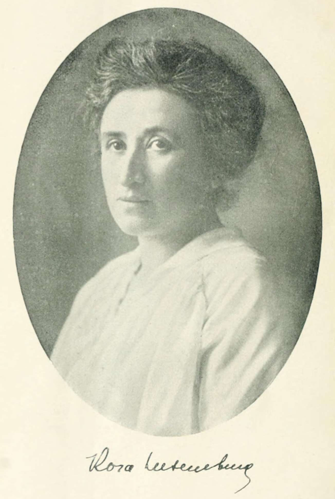

Home
Welcome to the
ROSA
LUXEMBURG
Internet
Library

"Freedom is always and exclusively freedom for the one who thinks differently."
— Rosa Luxemburg,
The Russian Revolution
, 1918
Featured work
Reform or Revolution
C O N T E N T S
--1900--
Reform or Revolution
--1906--
The Mass Strike, the Political Party and the Trade Unions
--1909--
The National Question
--1910--
Theory & Practice
--1913--
The Accumulation of Capital
--1915--
The Junius Pamphlet
--1918--
The Russian Revolution
Our Program and the Political Situation
The Socialisation of Society
A Call to the Workers of the World